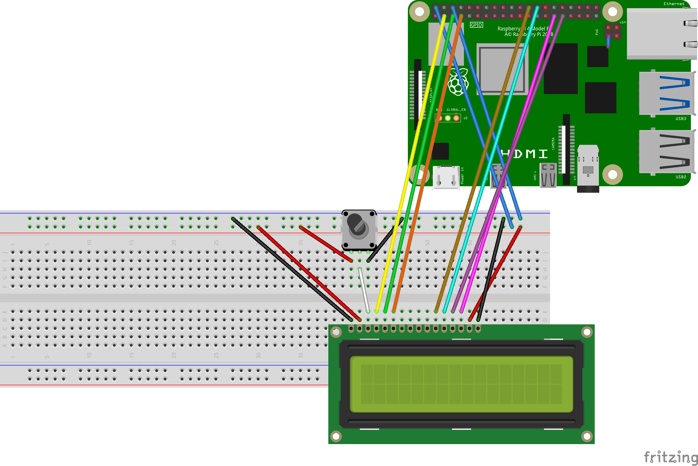
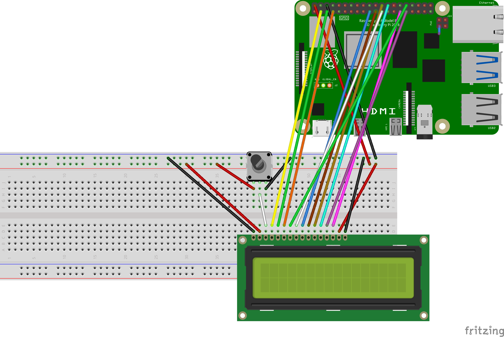

CharDisplay
Raspberry Pi package for controlling 16x2 character display (1602 LCD) on HD44780U module written in Julia.
Installation
Julia must be installed on Raspberry Pi. I have tested on v1.1.0 which can be installed with:
sudo apt update
sudo apt install juliaThe package can be installed from Julia environment with:
] add https://github.com/metelkin/CharDisplay.jl.gitCircuits
A. Connection for 4 bit mode
Display pins can be connected to any RaspberryPi GPIOs. For example this scheme is based on the following connections:
- VSS => GND (chip ground)
- VDD => +5V (chip power)
- V0 => central terminal of the potentiometer to get 0..+5V
- RS => GPIO2
- RW => GPIO3
- E => GPIO4
- D7-D4 => GPIO5-GPIO8
- A, R (light power) can be connected to 3.3V or 5V bus

B. Connection for 8 bit mode
Display pins can be connected to any RaspberryPi GPIOs. For example this scheme is based on the following connections:
- VSS => GND (chip ground)
- VDD => +5V (chip power)
- V0 => central terminal of the potentiometer
- RS => GPIO2
- RW => GPIO3
- E => GPIO4
- D7-D0 => GPIO5-GPIO12
- A, R (light power) can be connected to 3.3V or 5V bus

Usage
# setting connected pins
d = DisplayP4(
2, # RS
3, # RW
4, # E
5, # D7
6, # D6
7, # D5
8 # D4
)
write(d, "Julia +")
set_cursor(d, 0, 1) # move cursor to the second line
write(d, "Raspberry Pi")Known issues and limitations
Currently only parallel 8bit/4bit mode (without display driver) is supported.
The maximal rate (333 Byte/s) is limited by too long pauses between switching pins. The package uses
sleep(time)function wheretimecannot be less than1e-3(second). The theoretical rate can be 25000 Byte/s and it needs another approach withoutsleepfunction.The package works only in writing mode. Reading mode and checking BF (busy flag) signal is not supported.
Related projects
For more information read datasheet to the module
https://www.mbtechworks.com/projects/drive-an-lcd-16x2-display-with-raspberry-pi.html